vignettes/v02_bivariate.Rmd
v02_bivariate.RmdTidycomm includes five functions for bivariate explorative data analysis:
crosstab() for both categorical independent and
dependent variablest_test() for dichotomous categorical independent and
continuous dependent variablesunianova() for polytomous categorical independent and
continuous dependent variablescorrelate() for both continuous independent and
dependent variablesregress() for both continuous or factorial (translated
into dummy dichotomous versions) independent and continuous dependent
variablesWe will again use sample data from the Worlds of Journalism 2012-16 study for demonstration purposes:
WoJ
#> # A tibble: 1,200 × 15
#> country reach employment temp_contract autonomy_selection autonomy_emphasis
#> <fct> <fct> <chr> <fct> <dbl> <dbl>
#> 1 Germany Nati… Full-time Permanent 5 4
#> 2 Germany Nati… Full-time Permanent 3 4
#> 3 Switzerl… Regi… Full-time Permanent 4 4
#> 4 Switzerl… Local Part-time Permanent 4 5
#> 5 Austria Nati… Part-time Permanent 4 4
#> 6 Switzerl… Local Freelancer NA 4 4
#> 7 Germany Local Full-time Permanent 4 4
#> 8 Denmark Nati… Full-time Permanent 3 3
#> 9 Switzerl… Local Full-time Permanent 5 5
#> 10 Denmark Nati… Full-time Permanent 2 4
#> # ℹ 1,190 more rows
#> # ℹ 9 more variables: ethics_1 <dbl>, ethics_2 <dbl>, ethics_3 <dbl>,
#> # ethics_4 <dbl>, work_experience <dbl>, trust_parliament <dbl>,
#> # trust_government <dbl>, trust_parties <dbl>, trust_politicians <dbl>crosstab() outputs a contingency table for one
independent (column) variable and one or more dependent (row)
variables:
WoJ %>%
crosstab(reach, employment)
#> # A tibble: 3 × 5
#> employment Local Regional National Transnational
#> * <chr> <dbl> <dbl> <dbl> <dbl>
#> 1 Freelancer 23 36 104 9
#> 2 Full-time 111 287 438 66
#> 3 Part-time 15 32 75 4Additional options include add_total (adds a row-wise
Total column if set to TRUE) and
percentages (outputs column-wise percentages instead of
absolute values if set to TRUE):
WoJ %>%
crosstab(reach, employment, add_total = TRUE, percentages = TRUE)
#> # A tibble: 3 × 6
#> employment Local Regional National Transnational Total
#> * <chr> <dbl> <dbl> <dbl> <dbl> <dbl>
#> 1 Freelancer 0.154 0.101 0.169 0.114 0.143
#> 2 Full-time 0.745 0.808 0.710 0.835 0.752
#> 3 Part-time 0.101 0.0901 0.122 0.0506 0.105Setting chi_square = TRUE computes a \(\chi^2\) test including Cramer’s \(V\) and outputs the results in a console
message:
WoJ %>%
crosstab(reach, employment, chi_square = TRUE)
#> # A tibble: 3 × 5
#> employment Local Regional National Transnational
#> * <chr> <dbl> <dbl> <dbl> <dbl>
#> 1 Freelancer 23 36 104 9
#> 2 Full-time 111 287 438 66
#> 3 Part-time 15 32 75 4
#> # Chi-square = 16.005, df = 6, p = 0.014, V = 0.082Finally, passing multiple row variables will treat all unique value combinations as a single variable for percentage and Chi-square computations:
WoJ %>%
crosstab(reach, employment, country, percentages = TRUE)
#> # A tibble: 15 × 6
#> employment country Local Regional National Transnational
#> * <chr> <fct> <dbl> <dbl> <dbl> <dbl>
#> 1 Freelancer Austria 0.0134 0.0113 0.0162 0
#> 2 Freelancer Denmark 0.0537 0.0197 0.112 0.0127
#> 3 Freelancer Germany 0.0470 0.0507 0.00648 0
#> 4 Freelancer Switzerland 0.0403 0.00845 0.00162 0
#> 5 Freelancer UK 0 0.0113 0.0324 0.101
#> 6 Full-time Austria 0.0403 0.180 0.152 0.0127
#> 7 Full-time Denmark 0.168 0.192 0.295 0
#> 8 Full-time Germany 0.268 0.172 0.0616 0
#> 9 Full-time Switzerland 0.168 0.197 0.0875 0.0633
#> 10 Full-time UK 0.101 0.0676 0.113 0.759
#> 11 Part-time Austria 0 0.0225 0.0292 0
#> 12 Part-time Denmark 0.00671 0.0113 0.0178 0
#> 13 Part-time Germany 0 0.00282 0.00648 0
#> 14 Part-time Switzerland 0.0872 0.0479 0.0632 0
#> 15 Part-time UK 0.00671 0.00563 0.00486 0.0506You can also visualize the output from crosstab():
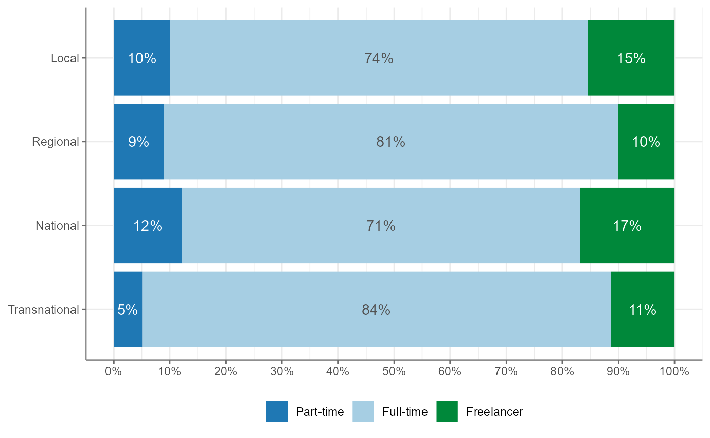
Note that the percentages = TRUE argument determines
whether the bars add up to 100% and thus cover the whole width or
whether they do not:
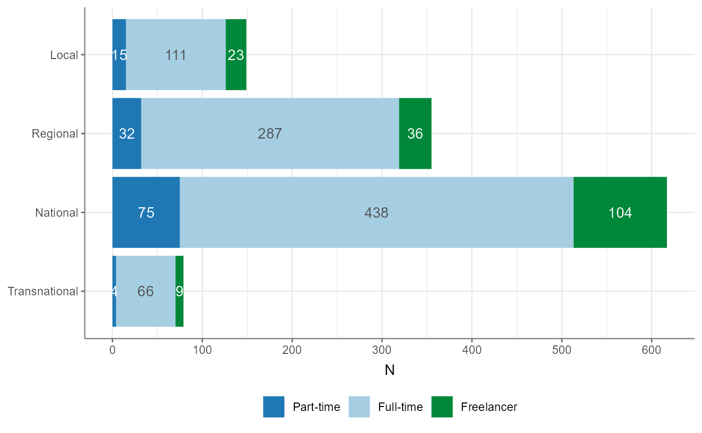
Use t_test() to quickly compute t-Tests for a group
variable and one or more test variables. Output includes test
statistics, descriptive statistics and Cohen’s \(d\) effect size estimates:
WoJ %>%
t_test(temp_contract, autonomy_selection, autonomy_emphasis)
#> # A tibble: 2 × 12
#> Variable M_Permanent SD_Permanent M_Temporary SD_Temporary Delta_M t df
#> * <chr> <num:.3!> <num:.3!> <num:.3!> <num:.3!> <num:.> <num> <dbl>
#> 1 autonom… 3.910 0.755 3.698 0.932 0.212 1.627 56
#> 2 autonom… 4.124 0.768 3.887 0.870 0.237 2.171 995
#> # ℹ 4 more variables: p <num:.3!>, d <num:.3!>, Levene_p <dbl>, var_equal <chr>Passing no test variables will compute t-Tests for all numerical variables in the data:
WoJ %>%
t_test(temp_contract)
#> # A tibble: 11 × 12
#> Variable M_Permanent SD_Permanent M_Temporary SD_Temporary Delta_M t
#> * <chr> <num:.3!> <num:.3!> <num:.3!> <num:.3!> <num:.> <num:>
#> 1 autonomy_se… 3.910 0.755 3.698 0.932 0.212 1.627
#> 2 autonomy_em… 4.124 0.768 3.887 0.870 0.237 2.171
#> 3 ethics_1 1.568 0.850 1.981 0.990 -0.414 -3.415
#> 4 ethics_2 3.241 1.263 3.509 1.234 -0.269 -1.510
#> 5 ethics_3 2.369 1.121 2.283 0.928 0.086 0.549
#> 6 ethics_4 2.534 1.239 2.566 1.217 -0.032 -0.185
#> 7 work_experi… 17.707 10.540 11.283 11.821 6.424 4.288
#> 8 trust_parli… 3.073 0.797 3.019 0.772 0.054 0.480
#> 9 trust_gover… 2.870 0.847 2.642 0.811 0.229 1.918
#> 10 trust_parti… 2.430 0.724 2.358 0.736 0.072 0.703
#> 11 trust_polit… 2.533 0.707 2.396 0.689 0.136 1.369
#> # ℹ 5 more variables: df <dbl>, p <num:.3!>, d <num:.3!>, Levene_p <dbl>,
#> # var_equal <chr>If passing a group variable with more than two unique levels,
t_test() will produce a warning and default to
the first two unique values. You can manually define the levels by
setting the levels argument:
WoJ %>%
t_test(employment, autonomy_selection, autonomy_emphasis)
#> Warning: employment has more than 2 levels, defaulting to first two (Full-time
#> and Part-time). Consider filtering your data or setting levels with the levels
#> argument
#> # A tibble: 2 × 12
#> Variable `M_Full-time` `SD_Full-time` `M_Part-time` `SD_Part-time` Delta_M
#> * <chr> <num:.3!> <num:.3!> <num:.3!> <num:.3!> <num:.>
#> 1 autonomy_se… 3.903 0.782 3.825 0.633 0.078
#> 2 autonomy_em… 4.118 0.781 4.016 0.759 0.102
#> # ℹ 6 more variables: t <num:.3!>, df <dbl>, p <num:.3!>, d <num:.3!>,
#> # Levene_p <dbl>, var_equal <chr>
WoJ %>%
t_test(employment, autonomy_selection, autonomy_emphasis, levels = c("Full-time", "Freelancer"))
#> # A tibble: 2 × 12
#> Variable `M_Full-time` `SD_Full-time` M_Freelancer SD_Freelancer Delta_M t
#> * <chr> <num:.3!> <num:.3!> <num:.3!> <num:.3!> <num:.> <num>
#> 1 autonom… 3.903 0.782 3.765 0.993 0.139 1.724
#> 2 autonom… 4.118 0.781 3.901 0.852 0.217 3.287
#> # ℹ 5 more variables: df <dbl>, p <num:.3!>, d <num:.3!>, Levene_p <dbl>,
#> # var_equal <chr>Additional options include:
pooled_sd: By default, the pooled variance will be used
the compute Cohen’s \(d\) effect size
estimates (\(s = \sqrt\frac{(n_1 - 1)s^2_1 +
(n_2 - 1)s^2_2}{n_1 + n_2 - 2}\)). Set
pooled_sd = FALSE to use the simple variance estimation
instead (\(s = \sqrt\frac{(s^2_1 +
s^2_2)}{2}\)).paired: Set paired = TRUE to compute a
paired t-Test instead. It is advisable to specify the case-identifying
variable with case_var when computing paired t-Tests, as
this will make sure that data are properly sorted.Previously, the (now deprecated) option of var.equal was
also available. This has been overthrown, however, as
t_test() now by default tests for equal variance (using a
Levene test) to decide whether to use pooled variance or to use the
Welch approximation to the degrees of freedom.
t_test() also provides a one-sample t-Test if you
provide a mu argument:
WoJ %>%
t_test(autonomy_emphasis, mu = 3.9)
#> # A tibble: 1 × 9
#> Variable M SD CI_95_LL CI_95_UL Mu t df p
#> * <chr> <dbl> <dbl> <dbl> <dbl> <dbl> <dbl> <dbl> <dbl>
#> 1 autonomy_emphasis 4.08 0.793 4.03 4.12 3.9 7.68 1194 3.23e-14Of course, also the result from t-Tests can be visualized easily as such:
unianova() will compute one-way ANOVAs for one group
variable and one or more test variables. Output includes test
statistics, \(\eta^2\) effect size
estimates, and \(\omega^2\), if Welch’s
approximation is used to account for unequal variances.
WoJ %>%
unianova(employment, autonomy_selection, autonomy_emphasis)
#> # A tibble: 2 × 9
#> Variable F df_num df_denom p omega_squared eta_squared Levene_p
#> * <chr> <num> <dbl> <dbl> <num> <num:.3!> <num:.3!> <dbl>
#> 1 autonomy_selec… 2.012 2 251 0.136 0.002 NA 0
#> 2 autonomy_empha… 5.861 2 1192 0.003 NA 0.010 0.175
#> # ℹ 1 more variable: var_equal <chr>Descriptives can be added by setting
descriptives = TRUE. If no test variables are passed, all
numerical variables in the data will be used:
WoJ %>%
unianova(employment, descriptives = TRUE)
#> # A tibble: 11 × 15
#> Variable F df_num df_denom p omega_squared `M_Full-time`
#> * <chr> <num:.3> <dbl> <dbl> <num> <num:.3!> <dbl>
#> 1 autonomy_selection 2.012 2 251 0.136 0.002 3.90
#> 2 autonomy_emphasis 5.861 2 1192 0.003 NA 4.12
#> 3 ethics_1 2.171 2 1197 0.115 NA 1.62
#> 4 ethics_2 2.204 2 1197 0.111 NA 3.24
#> 5 ethics_3 5.823 2 253 0.003 0.007 2.39
#> 6 ethics_4 3.453 2 1197 0.032 NA 2.58
#> 7 work_experience 3.739 2 240 0.025 0.006 17.5
#> 8 trust_parliament 1.527 2 1197 0.218 NA 3.06
#> 9 trust_government 12.864 2 1197 0.000 NA 2.82
#> 10 trust_parties 0.842 2 1197 0.431 NA 2.42
#> 11 trust_politicians 0.328 2 1197 0.721 NA 2.52
#> # ℹ 8 more variables: `SD_Full-time` <dbl>, `M_Part-time` <dbl>,
#> # `SD_Part-time` <dbl>, M_Freelancer <dbl>, SD_Freelancer <dbl>,
#> # eta_squared <num:.3!>, Levene_p <dbl>, var_equal <chr>You can also compute Tukey’s HSD post-hoc tests by setting
post_hoc = TRUE. Results will be added as a
tibble in a list column post_hoc.
WoJ %>%
unianova(employment, autonomy_selection, autonomy_emphasis, post_hoc = TRUE)
#> # A tibble: 2 × 10
#> Variable F df_num df_denom p omega_squared post_hoc eta_squared
#> * <chr> <num> <dbl> <dbl> <num> <num:.3!> <list> <num:.3!>
#> 1 autonomy_selec… 2.012 2 251 0.136 0.002 <df> NA
#> 2 autonomy_empha… 5.861 2 1192 0.003 NA <df> 0.010
#> # ℹ 2 more variables: Levene_p <dbl>, var_equal <chr>These can then be unnested with tidyr::unnest():
WoJ %>%
unianova(employment, autonomy_selection, autonomy_emphasis, post_hoc = TRUE) %>%
dplyr::select(Variable, post_hoc) %>%
tidyr::unnest(post_hoc)
#> # A tibble: 6 × 11
#> Variable Group_Var contrast Delta_M conf_lower conf_upper p d
#> <chr> <chr> <chr> <dbl> <dbl> <dbl> <dbl> <dbl>
#> 1 autonomy_sel… employme… Full-ti… -0.0780 -0.225 0.0688 0.422 -0.110
#> 2 autonomy_sel… employme… Full-ti… -0.139 -0.329 0.0512 0.199 -0.155
#> 3 autonomy_sel… employme… Part-ti… -0.0607 -0.284 0.163 0.798 -0.0729
#> 4 autonomy_emp… employme… Full-ti… -0.102 -0.278 0.0741 0.362 -0.133
#> 5 autonomy_emp… employme… Full-ti… -0.217 -0.372 -0.0629 0.00284 -0.266
#> 6 autonomy_emp… employme… Part-ti… -0.115 -0.333 0.102 0.428 -0.143
#> # ℹ 3 more variables: se <dbl>, t <dbl>, df <dbl>Visualize one-way ANOVAs the way you visualize almost everything in
tidycomm:
correlate() will compute correlations for all
combinations of the passed variables:
WoJ %>%
correlate(work_experience, autonomy_selection, autonomy_emphasis)
#> # A tibble: 3 × 6
#> x y r df p n
#> * <chr> <chr> <dbl> <int> <dbl> <int>
#> 1 work_experience autonomy_selection 0.161 1182 2.71e- 8 1184
#> 2 work_experience autonomy_emphasis 0.155 1180 8.87e- 8 1182
#> 3 autonomy_selection autonomy_emphasis 0.644 1192 4.83e-141 1194If no variables passed, correlations for all combinations of numerical variables will be computed:
WoJ %>%
correlate()
#> # A tibble: 55 × 6
#> x y r df p n
#> * <chr> <chr> <dbl> <int> <dbl> <int>
#> 1 autonomy_selection autonomy_emphasis 0.644 1192 4.83e-141 1194
#> 2 autonomy_selection ethics_1 -0.0766 1195 7.98e- 3 1197
#> 3 autonomy_selection ethics_2 -0.0274 1195 3.43e- 1 1197
#> 4 autonomy_selection ethics_3 -0.0257 1195 3.73e- 1 1197
#> 5 autonomy_selection ethics_4 -0.0781 1195 6.89e- 3 1197
#> 6 autonomy_selection work_experience 0.161 1182 2.71e- 8 1184
#> 7 autonomy_selection trust_parliament -0.00840 1195 7.72e- 1 1197
#> 8 autonomy_selection trust_government 0.0414 1195 1.53e- 1 1197
#> 9 autonomy_selection trust_parties 0.0269 1195 3.52e- 1 1197
#> 10 autonomy_selection trust_politicians 0.0109 1195 7.07e- 1 1197
#> # ℹ 45 more rowsSpecify a focus variable using the with parameter to
correlate all other variables with this focus variable.
WoJ %>%
correlate(autonomy_selection, autonomy_emphasis, with = work_experience)
#> # A tibble: 2 × 6
#> x y r df p n
#> * <chr> <chr> <dbl> <int> <dbl> <int>
#> 1 work_experience autonomy_selection 0.161 1182 0.0000000271 1184
#> 2 work_experience autonomy_emphasis 0.155 1180 0.0000000887 1182Run a partial correlation by designating three variables along with
the partial parameter.
WoJ %>%
correlate(autonomy_selection, autonomy_emphasis, partial = work_experience)
#> # A tibble: 1 × 7
#> x y z r df p n
#> * <chr> <chr> <chr> <dbl> <dbl> <dbl> <int>
#> 1 autonomy_selection autonomy_emphasis work_experie… 0.637 1178 3.07e-135 1181Visualize correlations by passing the results on to the
visualize() function:
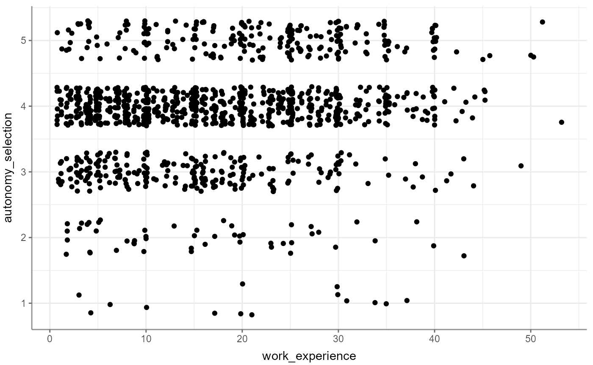
If you provide more than two variables, you automatically get a correlogram (the same you would get if you convert correlations to a correlation matrix):
WoJ %>%
correlate(work_experience, autonomy_selection, autonomy_emphasis) %>%
visualize()
#> Registered S3 method overwritten by 'GGally':
#> method from
#> +.gg ggplot2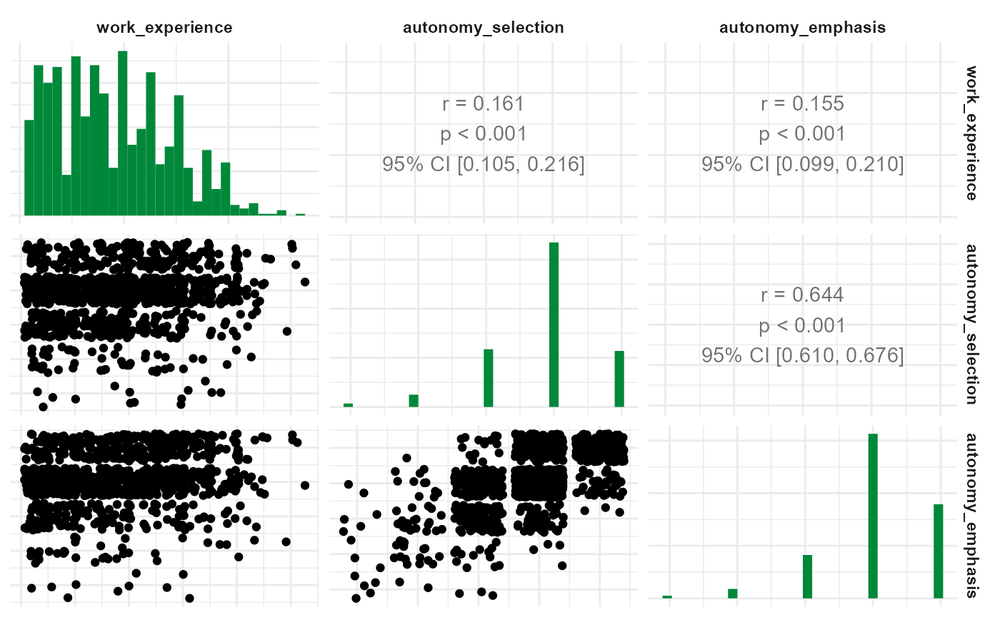
By default, Pearson’s product-moment correlations coefficients (\(r\)) will be computed. Set
method to "kendall" to obtain Kendall’s \(\tau\) or to "spearman" to
obtain Spearman’s \(\rho\) instead.
To obtain a correlation matrix, pass the output of
correlate() to to_correlation_matrix():
WoJ %>%
correlate(work_experience, autonomy_selection, autonomy_emphasis) %>%
to_correlation_matrix()
#> # A tibble: 3 × 4
#> r work_experience autonomy_selection autonomy_emphasis
#> * <chr> <dbl> <dbl> <dbl>
#> 1 work_experience 1 0.161 0.155
#> 2 autonomy_selection 0.161 1 0.644
#> 3 autonomy_emphasis 0.155 0.644 1regress() will create a linear regression on one
dependent variable with a flexible number of independent variables.
Independent variables can thereby be continuous, dichotomous, and
factorial (in which case each factor level will be translated into a
dichotomous dummy variable version):
WoJ %>%
regress(autonomy_selection, work_experience, trust_government)
#> # A tibble: 3 × 6
#> Variable B StdErr beta t p
#> * <chr> <dbl> <dbl> <dbl> <dbl> <dbl>
#> 1 (Intercept) 3.52 0.0906 NA 38.8 3.02e-213
#> 2 work_experience 0.0121 0.00211 0.164 5.72 1.35e- 8
#> 3 trust_government 0.0501 0.0271 0.0531 1.85 6.49e- 2
#> # F(2, 1181) = 17.400584, p = 0.000000, R-square = 0.028624The function automatically adds standardized beta values to the expected linear-regression output. You can also opt in to calculate up to three precondition checks:
WoJ %>%
regress(autonomy_selection, work_experience, trust_government,
check_independenterrors = TRUE,
check_multicollinearity = TRUE,
check_homoscedasticity = TRUE)
#> # A tibble: 3 × 8
#> Variable B StdErr beta t p VIF tolerance
#> * <chr> <dbl> <dbl> <dbl> <dbl> <dbl> <dbl> <dbl>
#> 1 (Intercept) 3.52 0.0906 NA 38.8 3.02e-213 NA NA
#> 2 work_experience 0.0121 0.00211 0.164 5.72 1.35e- 8 1.01 0.995
#> 3 trust_government 0.0501 0.0271 0.0531 1.85 6.49e- 2 1.01 0.995
#> # F(2, 1181) = 17.400584, p = 0.000000, R-square = 0.028624
#> - Check for independent errors: Durbin-Watson = 1.928431 (p = 0.220000)
#> - Check for homoscedasticity: Breusch-Pagan = 0.181605 (p = 0.669997)
#> - Check for multicollinearity: VIF/tolerance added to outputFor linear regressions, a number of visualizations are possible. The default one is the visualization of the result(s), is that the dependent variable is correlated with each of the independent variables separately and a linear model is presented in these:
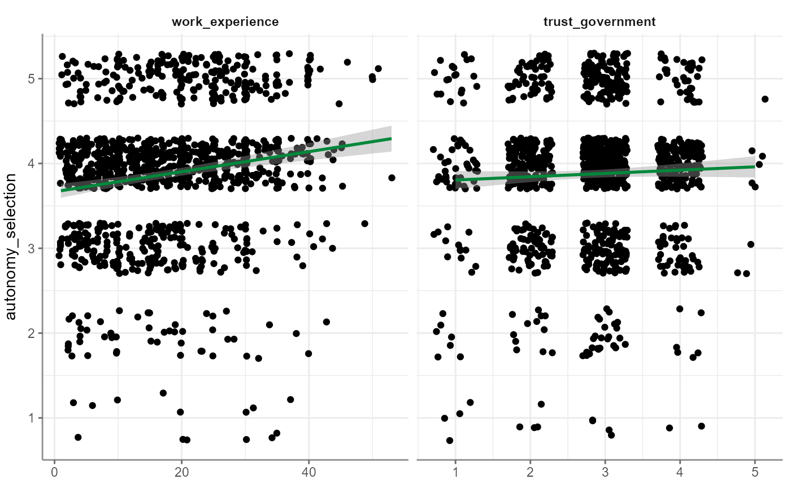
Alternatively you can visualize precondition-check-assisting depictions. Correlograms among independent variables, for example:
WoJ %>%
regress(autonomy_selection, work_experience, trust_government) %>%
visualize(which = "correlogram")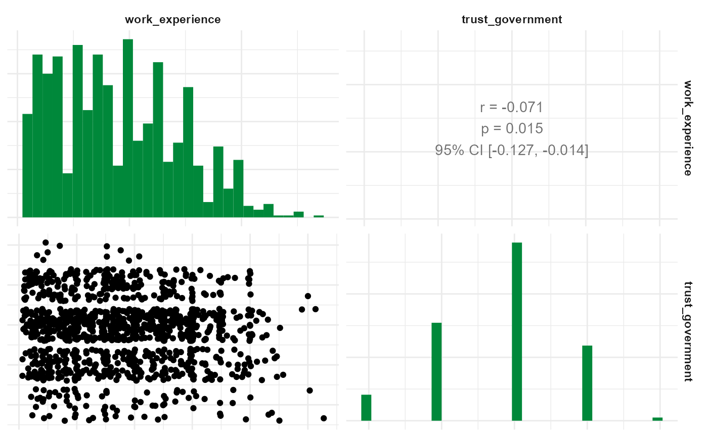
Next up, visualize a residuals-versus-fitted plot to determine distributions:
WoJ %>%
regress(autonomy_selection, work_experience, trust_government) %>%
visualize(which = "resfit")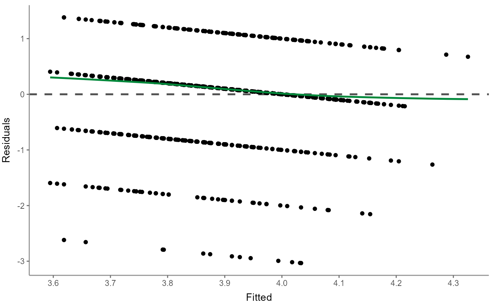
Or use a (normal) probability-probability plot to check for multicollinearity:
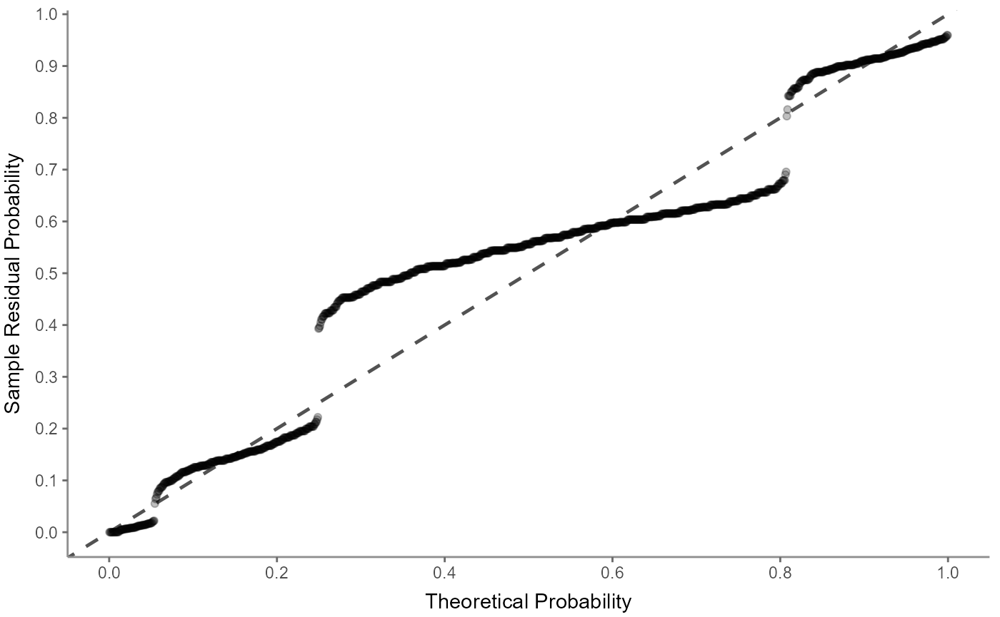
The (normal) quantile-quantile plot also helps checking for multicollinearity but focuses more on outliers:
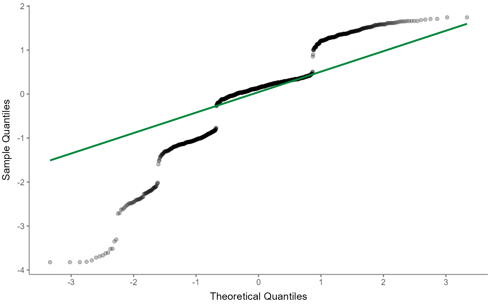
Next up, the scale-location (sometimes also called spread-location) plot checks whether residuals are spread equally to help check for homoscedasticity:
WoJ %>%
regress(autonomy_selection, work_experience, trust_government) %>%
visualize(which = "scaloc")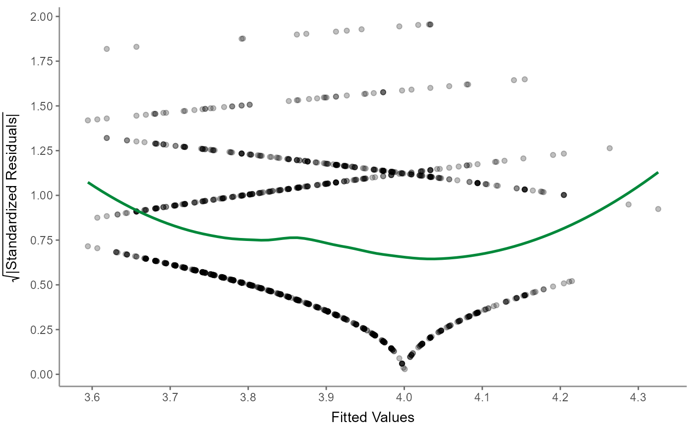
Finally, visualize the residuals-versus-leverage plot to check for influential outliers affecting the final model more than the rest of the data:
WoJ %>%
regress(autonomy_selection, work_experience, trust_government) %>%
visualize(which = "reslev")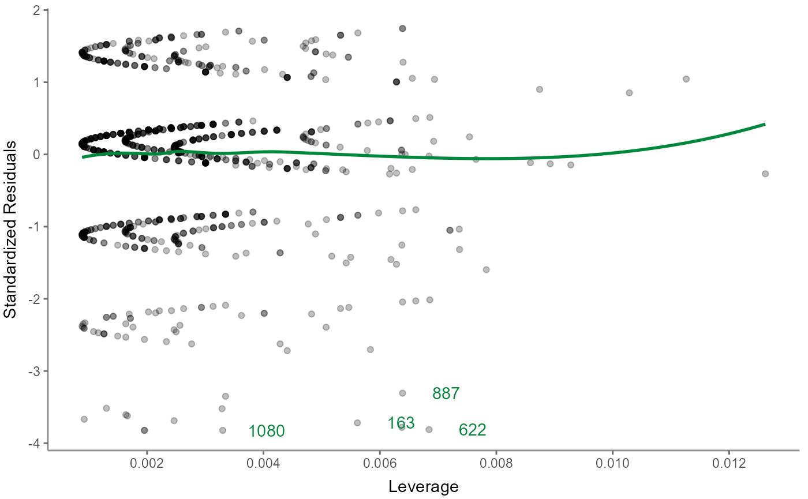